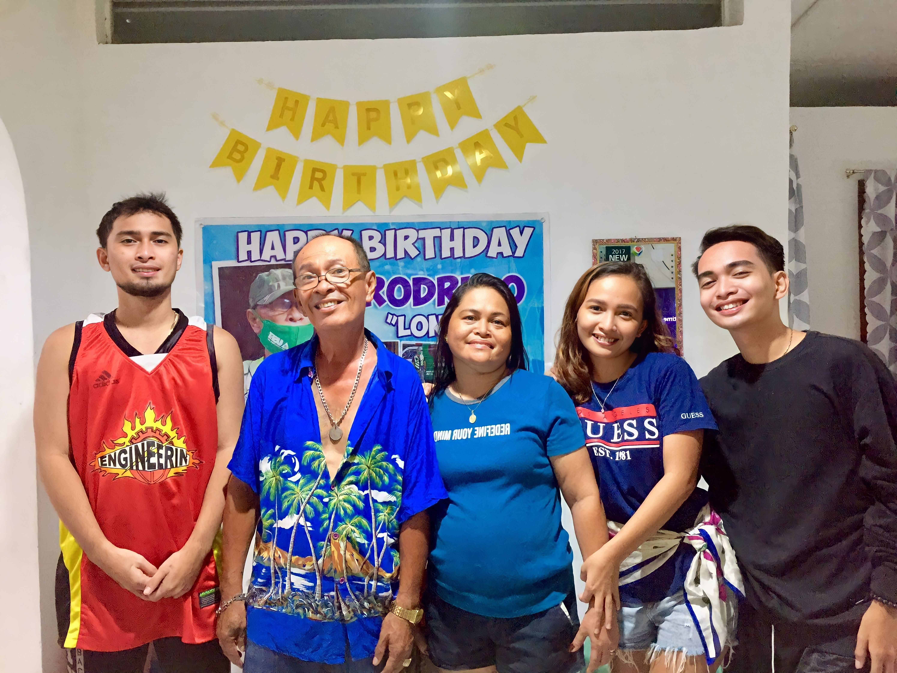

MY FAMILY
Let me introduce to you the Capili family. In this section, you will be able to know my parents and my siblings of this web page.
-
 "Family is not an important thing. It's everything."
"Family is not an important thing. It's everything."
-

This picture was taken on a year ago on my father's 60th birthday. We were so happy at that time because we're complete. That's why my sister decided to take a family picture of us. Eventhough my Papa died this year, I'd still remember those days that we're happy and those days cannot be replaced becuase it is made by love. I love my family, through ups and downs, we survive together. Stand or fall, together.
THESE ARE MY PARENTS
-
My mother, Vilma Capili
This is my mother, Vilma. My mother is my first teacher. She is my guide, my career counselor, my friend, and above all my world. I have never found anyone so near and dear to me except my mother. She is the sole survival of my life. I owe everything to her. Her abounding and infinite love is the source of survival for me.
-
My father, Rodrigo Capili
My father is a kind and hardworking man. He has always been a source of support and guidance for me. His wisdom and experience have helped me make important decisions in life. He has taught me the value of hard work and perseverance. I am grateful for all that he has done for me and I am proud to call him my father. Though he is not with us physically, I know that he is still with us and guide us on our life.
THE SIBLINGS
-
First child, my brother, Kitroville Capili
My brother is a unique individual who brings his own set of qualities and talents to the world. He has a great sense of humor and can make anyone laugh even on the toughest days. He is fiercely loyal to his friends and family, and will always stand up for what is right. My brother is also incredibly driven and hardworking, always striving to achieve his goals. Overall, he is a kind-hearted and compassionate person who is always willing to lend a helping hand to those in need.
-
The second child, my sister, Irish Rovie Capili Bongcaras
My sister is one of the most important people in my life. She is a kind-hearted and caring individual who always puts others before herself. Her passion for music and art inspires me daily and she always encourages me to pursue my dreams. She has been my rock during difficult times and I know that I can always count on her for support and guidance. I am grateful to have her in my life and I cherish the memories we have created together.
Myself
-
The third child, Rod Vincent Capili
As the youngest and third son of my family, I have always felt like the baby of the family, constantly showered with love and attention from my parents and older siblings. Growing up, I looked up to my older brother and sister and admired their accomplishments, while also learning from their mistakes. As the baby of the family, I was often the center of attention, and my siblings would dote on me and tease me in equal measure. Despite being the youngest, I have always tried to carve out my own path and make my mark on the world, and I am grateful for the love and support of my family as I navigate my way through life.